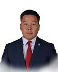

Member of the State Great Khural of Mongolia
Gantulga Dorjdugar
Member of the State Great Khural of Mongolia GANTULGA Dorjdugar
Mongolian People's Party
Education, graduated schools, education degree:
1995 - 2005 Secondary school # 4, Khentii aimag
2005 - 2009 "San", Mongolia-Russian joint University
2009 - 2011 MA in Business Administration, Ulaanbaatar
2012 PhD. candidate in National Academy of Administration
Working experience:
2006 - 2009 Teacher at “Lecturer” training center
2009 - 2010 Founder and President, Prosperity Locomotive Fund
2010 - 2011 Director, “Dr. English” training Center
2011 - 2016 Mongolian Social Democratic Youth Union
2011 - 2015 Secretary General, Mongolian Social Democratic Student Union
2015 Advisor to the Deputy Prime Minister of Mongolia
2015 President, Mongolian Social Democratic Student Union
2016 Member of the State Great Hural (Parliament) of Mongolia
Foreign language knowledge:
English